분석 지역 설정
분석 지역 설정 - 폴더 두 개 + 지역 선택 전체 화면 - 좌: 메뉴(작업 순서) · 우: 기능 페이지 · 아래: 실행 로그 ([지역 적용] 직후)
데이터팩 + 지역 선택 - 전 단계 입력 자동 연결
INPUT
S-Sim 데이터팩 폴더 + 결과 저장 폴더→
처리
선택한 지역의 자료를 각 파트 공통 데이터에 연결→
OUTPUT
S-Sim_분석결과(지역명)\ 생성 - 모든 결과를 메뉴 구성대로 저장- 1데이터팩 폴더 -
S-Sim_데이터팩. 구성은 아래 형식표 참고 - 2지역 - 데이터팩에 있는 지역 목록 (전남광주통합특별시 · 순천시)
- 3결과 저장 폴더 - 비워두면 데이터팩이 있는 폴더
- 4지역 적용 - 전 파트 입력 파일 자동 입력. 채운 항목은 로그에 표시
- 결과 폴더에 이전 결과가 있으면 다음 단계 입력까지 연결 + ✓ 표시.
- 창을 다시 열면 지난 지역 설정 복원.
데이터팩 구성 (전남광주통합특별시)
S-Sim 데이터팩 - 지역 폴더 지역\전남광주통합특별시\
| 폴더 · 파일 | 형식 | 필수 | 내용 |
|---|---|---|---|
| region.json | JSON | 필수 | 지역 정의 - 지역명·시군구 코드·자료 경로 |
| 00_경계 | GPKG | 필수 | 계획권역 · 시군구 27 · 읍면동 394 |
| 01_격자 | GPKG | 필수 | 국토공간거점지도 1km 격자 16,113개 (2023) |
| 02_생활인프라 | GPKG | 필수 | 생활인프라 충족도 500m · 1km |
| 03_인구추계 | CSV/XLSX | 필수 | 시군구 거주인구 추계 · 15세 이상 장래인구 · 고용률 |
| 04_개발사업 | GPKG | 선택 | 개발사업 지구 76건 |
| 05_시설 | GPKG | 필수 | 근린시설 5종 · 거점시설 5종 |
| 06_탄소 | CSV | 선택 | 격자 탄소 총배출 (2023) |
| 07_사용자자료 | GPKG/CSV | 필수 | 도로망 · 1km 격자 통근 통행 행렬 |
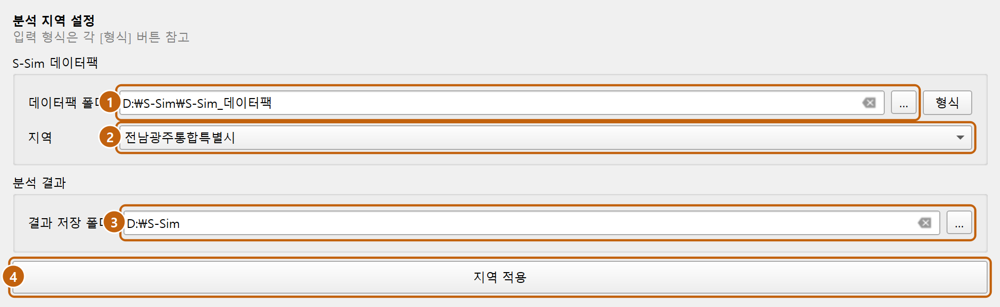
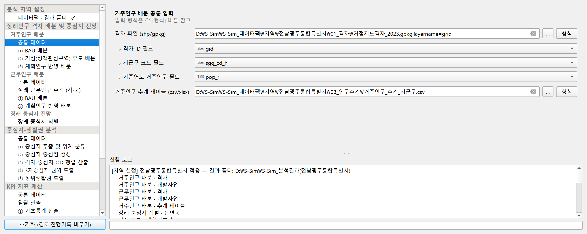
거주인구 배분 · 공통 데이터
거주인구 배분 · 공통 데이터 - 지역 적용 후
격자 + 시군구 추계 테이블 - 한 번만 선택
INPUT
1km 단위 격자 공간자료 + 시군구 장래인구 추계 테이블→
처리
표준 검증 (필드·중복·시군구 일치) · 연도 자동 감지→
OUTPUT
이후 모든 배분 단계가 이 입력을 공유- 1격자 파일 - 국토공간거점지도 1km. 필수 컬럼은 아래 형식표 참고
- 2필드 콤보 - 파일을 선택하면 필드 목록 자동 인식. 필드명이 표준과 달라도 여기서 골라주면 됨 (격자 ID·시군구 코드·기준연도 인구)
- 3추계 테이블 - 시군구 코드로 조인. 컬럼명은 고정(
sgg_cd_h,pop_YYYY)
- 지역 적용 시 세 칸 모두 자동 입력.
- 격자의 모든 시군구가 테이블에 있어야 함 → 격자를 대상 지역으로 미리 필터링.
- 총량 보존 원칙: 어느 시나리오든 시군구별 pop_YYYY 합계 = 추계 값.
입력 형식 (예시: 전남광주 데이터팩)
격자 레이어 폴리곤 shp·gpkg · 국토공간거점지도
| 컬럼 | 타입 | 필수 | 설명 |
|---|---|---|---|
| gid | 문자 | 필수 | 격자 고유 ID - 중복 금지 |
| sgg_cd_h | 코드 | 필수 | 시군구 코드 - 추계 테이블과 같은 코드 체계 |
| pop_r | 숫자 | 필수 | 기준연도 거주인구 (거주인구 배분 기준) |
| pop_w | 숫자 | 근무 시 필수 | 기준연도 근무인구 (근무인구 배분 기준) |
| type | 문자 | 선택 | 거점 유형 - 정책관심구역 산출에 사용 |
| gid | sgg_cd_h | sgg_nm | pop_r | pop_w | type |
| 다라4785 | 24010 | 동구 | 12204 | 6432 | 중심지Ⅰ |
| 다라4977 | 24010 | 동구 | 1925 | 174 | 중심지Ⅱ |
- 필드명이 달라도 필드 콤보에서 선택 가능
시군구 인구 추계 테이블 csv·xlsx · 거주·근무 공통 형식
| 컬럼 | 타입 | 필수 | 설명 |
|---|---|---|---|
| sgg_cd_h | 코드 | 필수 | 시군구 코드 - 격자와 같은 코드 체계, 중복 금지 |
| pop_YYYY | 숫자 | 필수 | 연도별 목표 총인구(거주 또는 근무) - 1개 이상, 연도 자동 감지 |
| sgg_nm | 문자 | 선택 | 시군구 명칭 (참고용) |
| sgg_cd_h | sgg_nm | pop_2025 | pop_2030 | pop_2035 | pop_2040 |
| 24010 | 동구 | 111784 | 113053 | 114033 | 112804 |
| 24020 | 서구 | 279313 | 267684 | 258055 | 248878 |
- 격자에 있는 모든 시군구가 이 테이블에 있어야 함 (없으면 에러)
공통 규칙 [형식] = 입력 형식. [산식 보기] = 계산 방식. 경로는 재시작 후에도 기억. 완료 시 메뉴 ✓ 표시 후 다음 단계로 자동 이동.
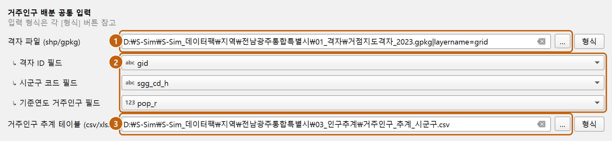
거주인구 배분 ①

① BAU 배분 - 결과 저장 파일과 실행 버튼이 전부
BAU 배분 - 현상 유지 시나리오
INPUT
공통 데이터의 격자 + 추계 테이블 (추가 입력 없음)→
알고리즘
pop(g,y) = P(s,y) × w(g)/Σw · w = 기준연도 격자인구 (분포 고정)→
OUTPUT
연도별 배분 인구 격자 → 연도별 지도 그룹 + 3D 슬롯 연결- 1결과 저장 파일 - 비워두면
거주인구 배분\거주배분_1_BAU.gpkg - 2실행 - 공통 데이터만 있으면 바로. 옆 [산식 보기]에 위 수식
- 가중치 합 0인 시군구(인구 전무)는 균등 배분 + 경고.
- 지도 그룹은 연도별 레이어(0·100·200·500·1000·5000 고정 구간) - 마지막 연도만 켜짐.
- 역할: "지금 많은 곳이 미래에도 많다"는 관성 기준선 - 거점유도·계획인구와 비교용.
출력 형식 (전남광주)
거주배분_1_BAU.gpkg 격자 폴리곤 · 원본 격자 컬럼 + 연도별 인구
| gid | sgg_nm | pop_r | pop_2025 | pop_2030 | pop_2035 | pop_2040 |
| 다라4785 | 동구 | 12204 | 12499.8 | 12641.7 | 12751.3 | 12613.8 |
| 다라4977 | 동구 | 1925 | 1971.7 | 1994.0 | 2011.3 | 1989.6 |
검증 실행 후 시군구별 pop_YYYY 합계가 추계 테이블과 일치하는지 확인 - 모든 배분 공통.
거주인구 배분 ②
② 거점유도 - 위: 거점 정의 · 아래: 배분 실행
거점유도 배분 - 정책관심구역 + 지수모형
INPUT
공통 데이터 + 거점 정의 자료 (생활인프라 충족도 또는 기존 거점 목록)→
알고리즘
거점 = 유형 ∪ 충족도 → w = ratio^지수 (거점 a·b, 비거점 c·d) 연도 연쇄→
OUTPUT
정책관심구역 + 거점유도 배분 격자 자료 → 지도 그룹(거점 경계 포함)- 1정책관심구역 파일 - 기존 거점 격자 파일이 있으면 여기에 직접 (gid만 매칭)
- 2새로 산출 - 거점 유형 체크 + 충족도 기준(마을 Me_CI_1 ≥ 3 · 거점 Me_CI_2 ≥ 3)과 합집합. 생활인프라 파일은 지역 적용 시 자동 입력
- 3정책관심구역 산출 - 결과가 1에 자동 연결
- 4지수 계수 - 기본값 a 1.1 · b 0.9 · c 0.9 · d 1.1 - 1에 가까울수록 BAU에 수렴
- 5결과 저장 파일 · 6배분 실행
ratio(g) = 직전 시점 격자인구 ÷ 시군구 평균 → w(g) = ratio^지수 → 비례 배분
a: 인구 많은 거점 집중 강화 · b: 적은 거점 감소 완화 · c: 많은 비거점 억제 · d: 적은 비거점 감소 강화 - 결과가 다음 연도 ratio로 연쇄
입력 형식 (예시: 전남광주 데이터팩)
정책관심구역 - 거점 격자 목록 shp·gpkg
| 컬럼 | 타입 | 필수 | 설명 |
|---|---|---|---|
| gid | 문자 | 필수 | 거점 격자 ID - 격자 레이어의 gid와 매칭 |
| gid | type | src |
| 다라4785 | 중심지Ⅰ | TYPE+CI |
| 다라5076 | 주변부 | CI |
- 이 레이어에 있는 gid = 거점, 없으면 비거점 (gid 외 컬럼 무시)
- 산출 결과의 src = 선정 근거 (TYPE: 유형 · CI: 충족도)
생활인프라 충족도 레이어 폴리곤 shp·gpkg
| 컬럼 | 타입 | 필수 | 설명 |
|---|---|---|---|
| GRID_1K_CD | 문자 | 필수 | 격자 ID - 격자 레이어의 gid와 매칭 |
| Me_CI_1 | 숫자 | 필수 | 마을시설 충족도 (0~10) |
| Me_CI_2 | 숫자 | 필수 | 거점시설 충족도 (0~10) |
| GRID_1K_CD | Me_CI_1 | Me_CI_2 |
| 다라4785 | 9 | 10 |
| 나마9702 | 2 | 2 |
- 미지정 시 거점 유형 필터만 적용
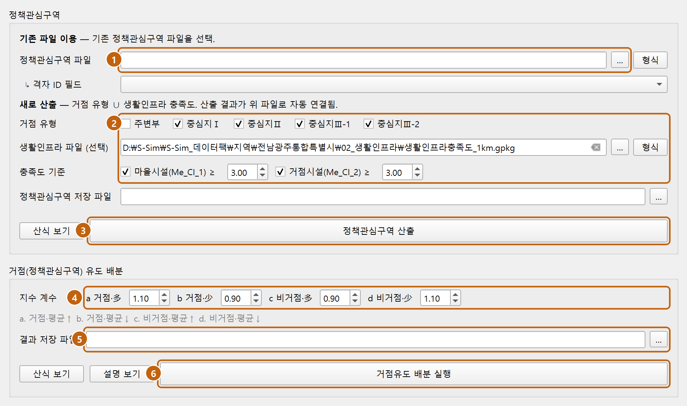
거주인구 배분 ③
③ 계획인구 반영 - 지구 필드만 지정하면 됨
계획인구 반영 배분 - 개발·비개발 분리
INPUT
공통 데이터 + 개발사업 지구 경계 자료 (계획인구·준공연도 포함)→
알고리즘
KOTI 입주율로 연도 분산 → 개발격자 균등 + 비개발 비례→
OUTPUT
계획인구 반영 배분 격자 자료 + 개발·비개발 분배 내역 → 지도 그룹(사업지 경계 포함)- 1개발사업 지구 파일 - 1피처 = 1사업. 지역 적용 시 자동 입력
- 2필드 콤보 - 계획인구·준공연도(필수), 사업 전체 인구합·관할 시군구 코드(선택)
- 3결과 저장 파일 · 분배 CSV - 비워두면 자동 저장
- 4실행
입주율: 10만↑ 30/20/20/20/10% · 5만~10만 50/20/15/15% · 5만 미만 75/15/10%
유입연도는 다음 목표연도로(2028→2030) · 개발격자 = 경계 교차 전부, 균등 배분 · 비개발 = 총량−개발, 직전 시점 비례 · 이전 개발지구는 다음 연도 거주지화
- 마지막 목표연도 이후 준공 사업은 반영 불가 (로그 경고).
입력 형식 (예시: 전남광주 데이터팩)
개발사업 지구 경계 폴리곤 · 1행 = 1개발사업
| 컬럼 | 타입 | 필수 | 설명 |
|---|---|---|---|
| plan_pop | 숫자 | 필수 | 계획인구(명) - 0·NULL 행은 제외 |
| yr_done | 정수 | 필수 | 준공연도 (예: 2028) |
| prj_pop | 숫자 | 선택 | 사업 전체 계획인구 합 - 복수 시군 분할 사업의 입주율 구간 판정용 |
| sgg_cd_h | 코드 | 선택 | 관할 시군구 코드 - 있으면 해당 시군 격자로만, 없으면 교차 시군 1/n |
| DST_NM | plan_pop | yr_done | prj_pop | sgg_cd_h |
| 광주선운2 공공주택지구 | 7698 | 2024 | 7698 | 24050 |
| 광주연구개발특구 첨단3지구 | 18924 | 2025 | 18924 | 24040 |
- 필드명이 달라도 필드 콤보에서 선택 가능
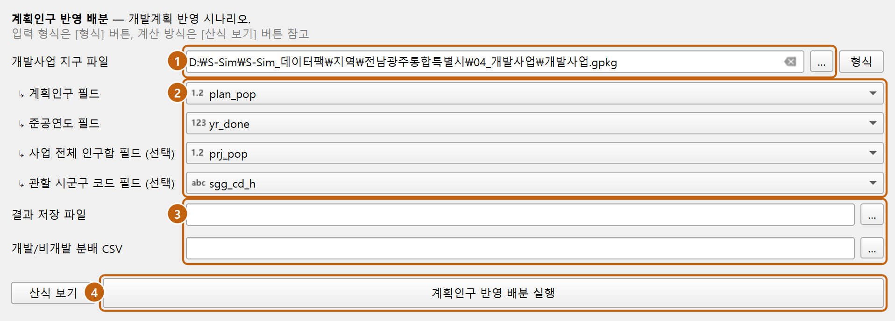
근무인구 배분 · 공통 데이터
근무인구 배분 · 공통 데이터 - 추계 테이블은 추계 실행 후 채워짐
격자 + 근무인구 추계 테이블
INPUT
1km 격자 (기준연도 근무인구) + 시군구 근무인구 추계 테이블→
처리
거주인구 공통 데이터와 같은 검증→
OUTPUT
근무 BAU · 계획인구 반영 배분이 이 입력을 공유- 1격자 파일 - 거주인구와 같은 격자. 지역 적용 시 자동 입력
- 2필드 콤보 - 격자 ID · 시군구 코드 · 기준연도 근무인구(
pop_w) - 3근무인구 추계 테이블 - 장래 근무인구 추계 실행 시 자동 연결. 직접 넣으면 추계 단계 ✓ 생략
- 추계 테이블 형식은 거주인구와 같음 (
sgg_cd_h,pop_YYYY).
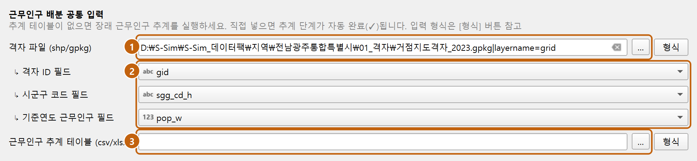
근무인구 배분 · 장래 근무인구 추계
장래 근무인구 추계 - 입력 2개 + 기준연도
장래 근무인구 추계 - 배분 전 필수 1회
INPUT
고용률 시계열 + 15세 이상 장래인구 + 격자 근무인구(앵커)→
알고리즘
고용률 CAGR → 장래 취업자 → 구간별 증감률을 앵커에 연쇄→
OUTPUT
근무인구 추계 테이블 - 공통 데이터로 자동 연결- 1고용률 시계열 - 지역·연도·고용률 3열 (지역당 2개 연도 이상). 지역 이름은 격자
sgg_nm과 일치 - 215세 이상 장래인구 - 지역 × 연도 컬럼. 이 연도들이 추계 목표연도가 됨
- 3앵커 기준연도 - 격자 pop_w의 시점 (기본값 2023)
- 4추계 CSV 저장 파일 · 5실행 - 완료 시 자동 연결 + ① BAU로 이동
취업자(y) = 고용률(y) × 15세 이상 인구(y) → 근무인구(t₁) = 근무인구(직전) × (1+g)^년수
- 공통 데이터에서 격자를 먼저 선택해야 실행 가능 (앵커 산출용).
입력 형식 (예시: 전남광주 데이터팩)
고용률 시계열 csv·xlsx · long 형식
| 컬럼 | 타입 | 필수 | 설명 |
|---|---|---|---|
| 1열: 지역 | 문자 | 필수 | 시군구 이름 - 격자 sgg_nm과 일치 |
| 2열: 연도 | 정수 | 필수 | 관측 연도 - 지역당 2개 이상 |
| 3열: 고용률 | 숫자 | 필수 | 고용률(%) |
| 지역 | 연도 | 고용률(%) |
| 강진군 | 2021 | 70.0 |
| 강진군 | 2025 | 68.9 |
- 컬럼 이름 무관 - 첫 3개 컬럼을 지역·연도·값 순으로 해석
- '합계' 포함 행은 자동 제외
15세 이상 장래인구 csv·xlsx · wide 형식
| 컬럼 | 타입 | 필수 | 설명 |
|---|---|---|---|
| 1열: 지역 | 문자 | 필수 | 시군구 이름 - 격자 sgg_nm과 일치 |
| 연도 컬럼 | 숫자 | 필수 | 연도별 15세 이상 인구 - 2개 이상 |
| 지역 | 2022 | 2025 | 2030 | 2035 | 2040 |
| 강진군 | 29241 | 28638 | 27984 | 27438 | 26905 |
| 광산구 | 359218 | 360648 | 356491 | 345332 | 329246 |
- 연도 컬럼명은 2030·2030년·pop_2030 모두 인식
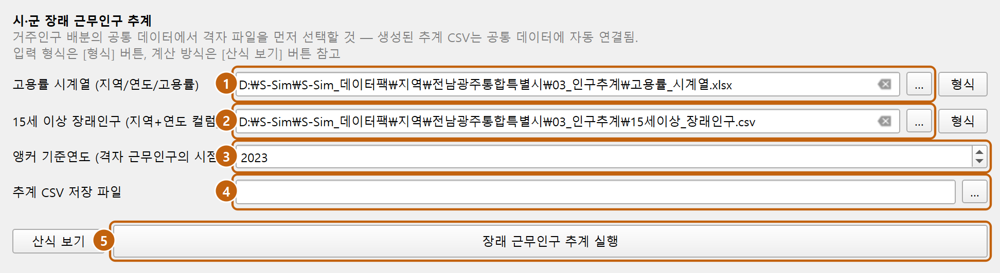
근무인구 배분 ①
근무 ① BAU 배분
BAU 배분 - 거주 BAU와 같은 방식
INPUT
근무 공통 데이터 (격자 pop_w + 근무인구 추계)→
알고리즘
기준연도 근무인구 분포 고정, 시군구 총량만 증감→
OUTPUT
근무 BAU 배분 격자 자료 → 3D 슬롯 자동 연결- 1결과 저장 파일 - 비워두면
근무인구 배분\근무배분_1_BAU.gpkg - 2실행
- 근무인구 추계 테이블이 없으면 실행 불가 → 장래 근무인구 추계 먼저.
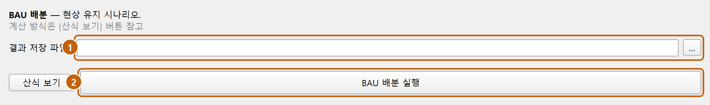
근무인구 배분 ②
근무 ② 계획인구 반영 - 위: 격자 배분 · 아래: 개발지구 근무인구 총량
계획인구 반영 배분 - 개발지구 근무 유입
INPUT
근무 공통 데이터 + 개발사업 지구 경계 자료→
알고리즘
개발지구 근무 유입 = 계획인구 × 시군 원단위, 연도 분산→
OUTPUT
근무 계획인구 반영 배분 격자 자료 + 시군별 개발·비개발 분배 CSV- 1개발사업 지구 파일 - 거주 계획인구 반영과 같은 파일
- 2필드 콤보 - 계획인구·준공연도(필수), 사업 전체 인구합·관할 시군구 코드(선택)
- 3근무 원단위 - 체크 시 개발지구 근무 유입 = 계획인구 × 시군별 (근무인구 합 ÷ 주거인구 합). 분모 필드 기본값
pop_r - 4배분 실행
- 5개발지구 장래 근무인구 산출 - 격자 배분 없이 개발지구 근무인구 총량만 시군·연도별 CSV로
개발지구 근무 유입 = 연도별 입주 계획인구 × 시군 원단위(Σ근무인구 ÷ Σ주거인구)
관할 시군이 없는 사업은 전체 원단위 적용
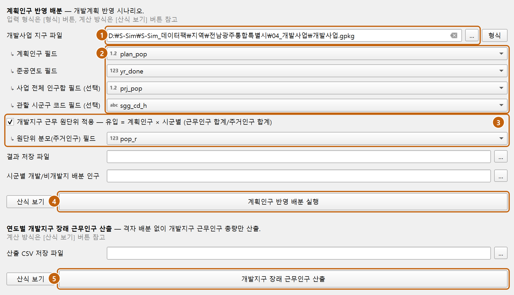
장래 중심지 전망
장래 중심지 식별 - 임계값 전부 수정 가능
장래 중심지 식별 - 밀도 기반 4단계
INPUT
거주 배분결과 + 근무 배분결과 (공통 연도 자동 감지)→
알고리즘
격자 분류 → 100m 버퍼 병합 → 소집적지 제거 → 위계 구분→
OUTPUT
연도별 중심지 폴리곤(위계·인구·밀도) + 요약 통계 → 연도별 위계 지도 그룹 + 3D 슬롯- 1거주·근무 배분결과 - 계획인구 반영 결과 자동 연결. 다른 시나리오도 가능, 같은 격자(gid)여야 함
- 2기준연도 - pop_r·pop_w로 기준연도도 분석 (0 = 제외)
- 3집적지 기준 - 1: 주거≥1,500·근무≥900 / 2: 주거≥300·근무≥150 / 3: 주거≥300
- 4위계 기준 - 체크한 조건만 AND 적용. 기본값 1차: 밀도≥4,500·주거 5만·근무 5만 / 2차: 밀도≥300·주거 5천·근무 5천 / 3차: 밀도≥300
- 5후처리(선택) - 읍면동별 중복 제거(읍면동마다 주거인구 최대 1개) · 중심지 간 최소 거리(기본 1,500m, 폴리곤 경계 간 직선거리)
- 6실행 - 저장 파일 두 칸은 비워두면 자동 저장
출력 형식 (전남광주)
중심지_식별.gpkg 연도별 중심지 폴리곤
| 컬럼 | 설명 |
|---|---|
| year · tier | 연도 · 위계(1차·2차·3차) |
| pop_r · pop_w | 중심지 주거·근무인구 |
| area_km2 · dens_r | 면적 · 주거인구 밀도 |
| year | tier | n_grid | pop_r | pop_w | dens_r |
| 2040 | 1차 | 166 | 1284900.9 | 821270.4 | 7736.2 |
주의 장래연도까지 보려면 근무인구 배분을 먼저. CRS는 미터 단위(EPSG:5179).
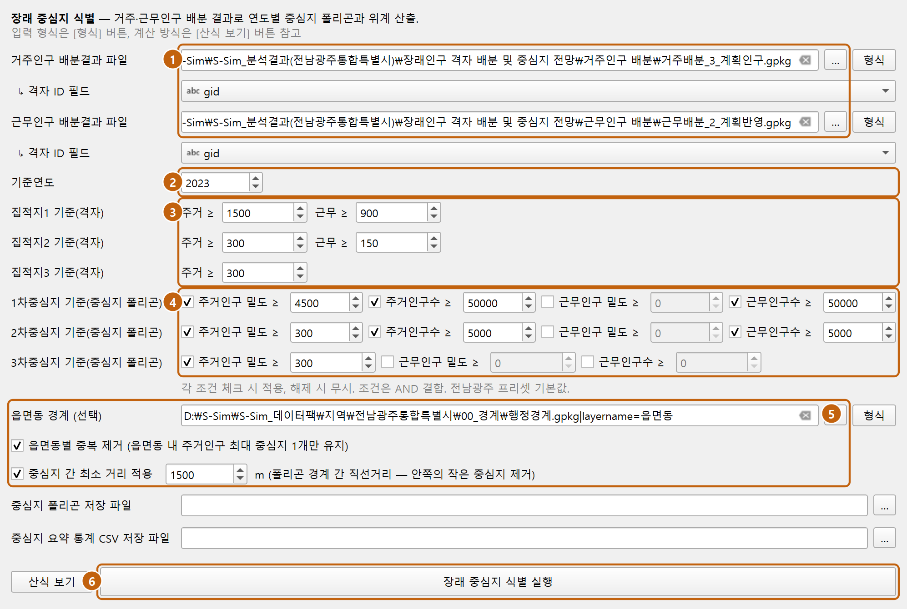
중심지-생활권 분석 · 공통 데이터
생활권 분석 · 공통 데이터 - ⑥⑦은 ②③ 실행 후 채워짐
원천 파일 5종 + 단계 산출 2종
INPUT
원천 5종 (격자·읍면동·생활인프라·도로망·통행)→
처리
파일 선택 시 필드 목록 자동 인식 - 각 단계 페이지의 필드 콤보에 공급→
연결
⑥은 ②, ⑦은 ③ 실행 시 자동 연결. 완성본을 직접 넣으면 그 단계 생략- 1거점지도 격자 - ①~⑤ 전부 사용
- 2읍면동 경계(선택) - 이름 부여·중복 제거 (①)
- 3생활인프라충족도 - 시설 충족 여부 (①)
- 4도로망 - 거리 계산 (③ · ⑤ · KPI)
- 5통행 행렬 - 매력도용 (⑤)
- 6중심지 중심점 - ② 실행 시 자동 연결
- 7격자→중심지 OD - ③ 실행 시 자동 연결
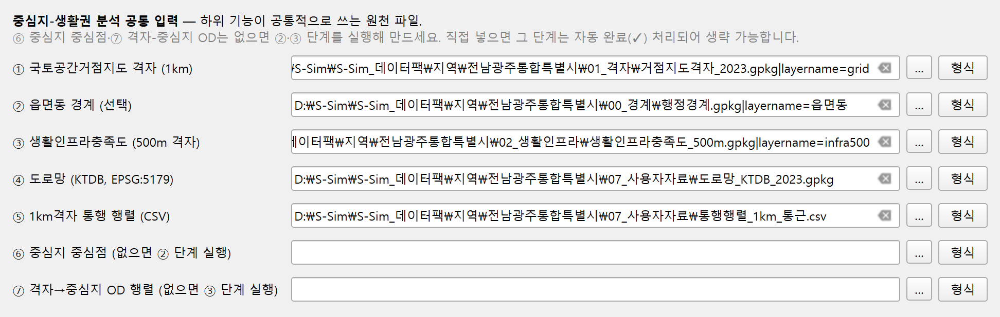
입력 형식 (예시: 전남광주 데이터팩)
③ 생활인프라충족도 500m 격자 폴리곤
| 컬럼 | 타입 | 필수 | 설명 |
|---|---|---|---|
| *_ox 열들 | 숫자 | 필수 | 시설별 충족 여부(0/1) - 마을시설·거점시설 열을 ① 페이지에서 선택 |
| gid | kg_ox | el_ox | ps_ox | pl_ox |
| 가다76a72a | 0 | 0 | 0 | 0 |
④ 도로망 라인 shp·gpkg
| 컬럼 | 타입 | 필수 | 설명 |
|---|---|---|---|
| ONEWAY | 문자 | 필수 | 일방통행 여부 - 최단거리 계산에 사용 |
| LINK_ID | ROAD_NAME | ONEWAY |
| 436300475 | 해강로 | 0 |
- CRS는 EPSG:5179
⑤ 1km격자 통행 행렬 CSV · 통근 OD
| 컬럼 | 타입 | 필수 | 설명 |
|---|---|---|---|
| o_GRID_1K_CD | 문자 | 필수 | 출발 격자 ID |
| d_GRID_1K_CD | 문자 | 필수 | 도착 격자 ID |
| VOL2 | 숫자 | 필수 | 통행량 - 매력도의 유입·유출 통행 집계 |
| o_GRID_1K_CD | d_GRID_1K_CD | VOL2 |
| 가다7967 | 가다8065 | 9.36 |
⑦ 격자→중심지 OD 행렬 CSV · ③ 출력
| 컬럼 | 타입 | 필수 | 설명 |
|---|---|---|---|
| origin_id | 문자 | 필수 | 출발 격자 ID - 격자 gid와 매칭 |
| destination_id | 문자 | 필수 | 도착 중심지 격자 ID - 중심점 gid와 매칭 |
| total_cost | 숫자 | 필수 | 이동 거리(m) - 최소값 중심지로 할당 |
| origin_id | destination_id | total_cost |
| 다라5076 | 라라2140 | 102301.5 |
중심지-생활권 분석 ①
① 중심지 추출 및 위계 분류 - 단계별 그룹박스, 파일은 공통 데이터에서
중심지 추출 및 위계 분류 - 후보 추출 → 속성 집계 → 위계 설정
INPUT
거점지도 격자 + 생활인프라 충족도 + 읍면동 경계(선택)→
알고리즘
단계별 버튼 - 앞 단계 완료 시 다음 단계 활성화→
OUTPUT
중심지 위계 폴리곤 → 위계색 지도 + ② 자동 연결- 11단계 후보 추출 - 거점 유형 중심지Ⅰ·Ⅱ 격자(후보그룹1) + 거주인구밀도 임계값 이상 격자(후보그룹2, 그룹1 1km 밖). 읍면동별 중복 제거 · 중심지 간 최소 거리(1,500m) 선택
- 22단계 속성 추출 - 집계 항목 체크: 주거·근무인구(합·밀도·격자평균), 유입·유출중심성, 생활인프라 평균(시설 열 선택). [집계 결과 표 보기]로 확인
- 3가이드라인 기준 - 후보 최소 주거밀도 · 도시위상(거점·강소·자립) 선택 후 [기준 적용] → 1~3차 기준값 자동 입력. [기준표 보기]에 기준표
- 4위계 기준 - 숫자 직접 수정 가능. 체크한 조건만 AND
- 5고급 설정 - 집계 속성 행 + AND·OR로 유형별 조건 조립 (조건 있는 유형은 숫자 기준 대체)
- 63단계 실행
전남광주(거점 · 150명/㎢) 기준값
1차: 주거밀도 4,000 · 주거 10만 · 근무밀도 1,750 · 근무 5만 / 2차: 750 · 5천 · 250 · 2천 / 3차: 주거밀도 150 · 주거 150 - 최소밀도를 바꾸면 1단계부터, 도시위상만 바꾸면 3단계만 다시 실행
출력 형식 (전남광주)
중심지_위계.gpkg 중심지 폴리곤 · ② 자동 연결
| 컬럼 | 설명 |
|---|---|
| cand_id · cand_nm | 중심지 ID · 이름(읍면동) |
| rpop_* · wpop_* · pcin/pcout | 2단계 집계 속성 |
| tier | 위계 (1차중심지 · 2차중심지 · 3차중심지) |
| cand_id | cand_nm | rpop_sum | rpop_den | wpop_sum | tier |
| 1 | 시전 | 230909 | 4198.35 | 111158 | 1차중심지 |
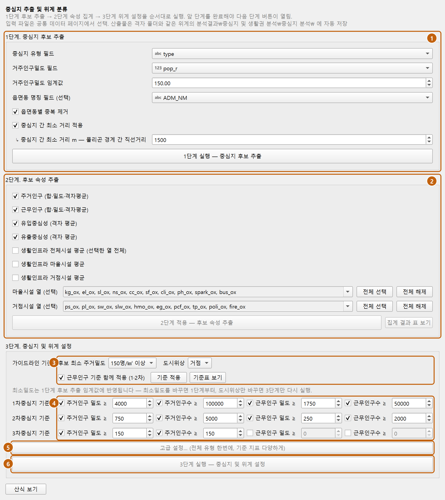
중심지-생활권 분석 ②
② 중심지 중심점 생성 - 위계 결과는 자동 연결
중심지 중심점 생성 - 위계와 같은 ID 체계로
INPUT
중심지 위계 결과(←①) + 거점지도 격자→
알고리즘
위계 폴리곤에 속한 격자의 중심점 추출 + 소속 중심지 ID·이름 부여→
OUTPUT
중심지 중심점 → 공통 데이터 ⑥ 자동 연결- 1결과 데이터 - 중심지 위계(←① 자동 연결). 기존 파일 직접 지정 가능
- 2중심지 ID·이름 필드 - 기본값 cand_id·cand_nm (① 출력과 일치)
- 3실행 - 결과가 ⑥에 자동 연결
- ①의 위계와 같은 ID 체계로 중심점이 만들어짐 - ③·④의 ID 어긋남 방지.
- 한 격자가 여러 중심지에 걸치면 첫 중심지에 배정 (경고).
출력 형식 (전남광주)
중심지_중심점.gpkg 포인트 · 703개
| gid | cent_id | cent_nm |
| 라라2140 | 1 | 시전 |
| 라라1743 | 1 | 시전 |
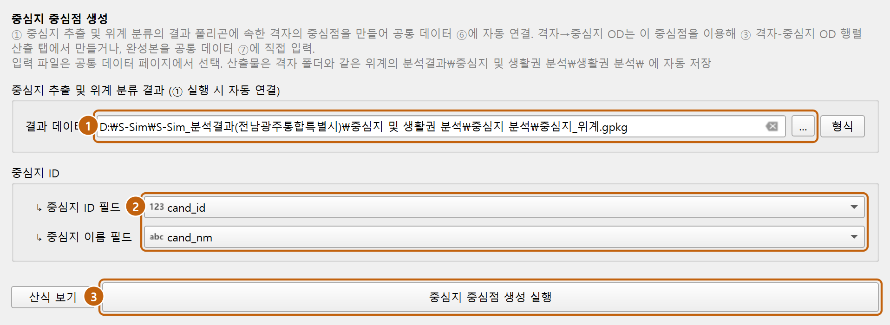
중심지-생활권 분석 ③
③ 격자-중심지 OD - 필드 확인 후 실행
격자-중심지 OD 행렬 산출 - 도로망 최단거리
INPUT
거점지도 격자 + 중심지 중심점(←②) + 도로망→
알고리즘
격자·중심점을 가까운 도로에 연결 → 도로망 최단거리 (일방통행 반영)→
OUTPUT
격자 × 중심지 OD 행렬 CSV → 공통 데이터 ⑦ 자동 연결- 1필드 - 격자 ID · 중심지 점 ID · 일방통행. 공통 데이터 파일에서 자동 인식
- 2실행 - 결과가 ⑦에 자동 연결
비용(total_cost) = 진입 거리 + 도로 최단거리 + 진출 거리 (m)
진입: 격자 중심 → 가까운 도로 · 진출: 도로 → 중심점 · 도달불가 쌍은 제외 (로그에 건수 표시)
- 전남광주: 격자 16,113 × 중심점 703 = 11,327,439쌍, 약 4분.
주의 도로가 없는 섬은 가까운 도로까지 직선거리로 연결해 계산.
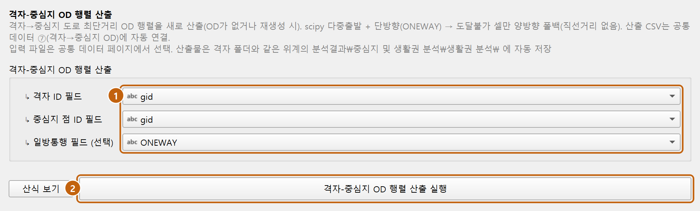
중심지-생활권 분석 ④
④ 3차중심지 권역 - 필드 매칭 + 스무딩 설정만
3차중심지 권역 도출 - OD 최소 비용 할당 + 스무딩
INPUT
격자→중심지 OD(⑦) + 거점지도 격자 + 중심지 중심점(⑥)→
알고리즘
격자별 최소 비용 중심지 할당 (자기 권역 비용 0.1) → 이웃 최빈값 반복 스무딩→
OUTPUT
3차중심지 권역 격자 → 권역별 지도 + ⑤ 자동 연결- 1필드 - OD 출발·도착·비용, 격자 ID, 중심점 격자 ID·중심지 ID·이름 (공통 데이터에서 자동 인식)
- 2스무딩 - 반복 횟수 기본값 8 (클수록 경계가 매끈, 작은 권역은 이웃에 합쳐질 수 있음) · 랜덤 시드가 같으면 같은 결과
- 3실행
- 지도 그룹: 스무딩(켜짐) + 할당 원본(꺼짐, 같은 배색) - 전후 비교.
- 전남광주: 중심지 199곳 → 권역 183개 (스무딩에서 작은 권역이 이웃에 합쳐짐).
출력 형식 (전남광주)
기초생활권_스무딩.gpkg 격자 폴리곤 · ⑤ 자동 연결
| gid | dest_id | total_cost | cent_id | cent_nm |
| 다라4977 | 다라4880 | 3578.1 | 37 | 수완 |
- 기초생활권_할당.gpkg = 스무딩 전, 기초생활권_권역.gpkg = 권역 경계
주의 OD의 ID 체계가 격자·중심점과 같아야 함 - 다르면 전부 미할당.
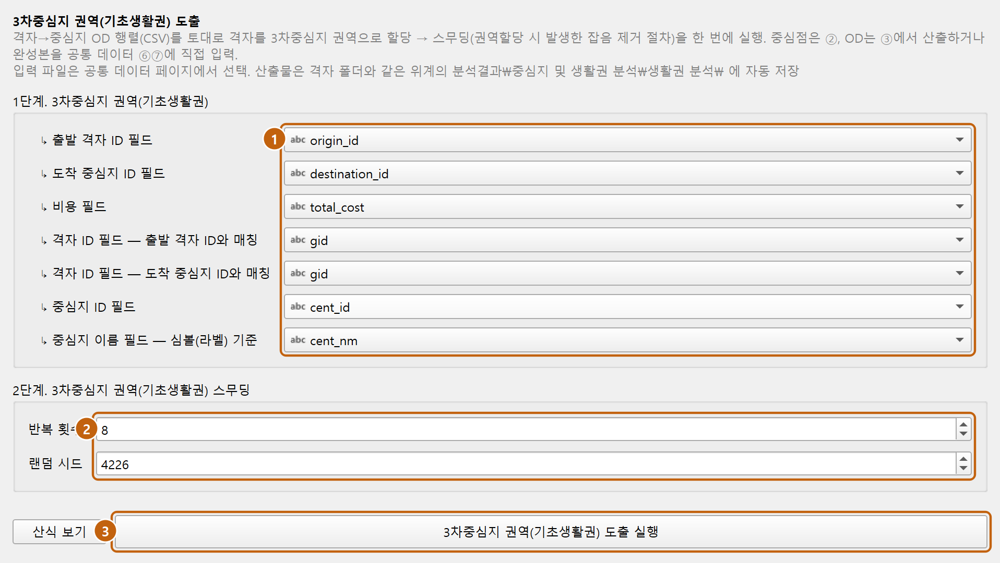
중심지-생활권 분석 ⑤
⑤ 상위생활권 - 통행 필드 확인 후 실행
상위생활권 도출 - 대표점 → 거리행렬 → 매력도
INPUT
중심지 위계(←①) + 3차중심지 권역(←④) + 도로망 + 통행 행렬→
알고리즘
인구가중 대표점 → 중심지 간 도로 최단거리 → 매력도 최대 상위중심지 배정 (2차 → 1차)→
OUTPUT
2차·1차 중심지 권역 경계 + 할당 격자 + 매력도·이동량 CSV- 1기초생활권 결과 - ④ 실행 시 자동 연결
- 2통행 필드 - 출발·도착 격자 ID와 통행량 (기본값 o/d_GRID_1K_CD · VOL2)
- 3생활권 명칭 - 체크 시 1차 중심지 소재 시·군명으로 표기 (예: 광주 생활권)
- 4실행 - 1~4단계 연속 실행
매력도 = (유입통행 + 유출통행) ÷ 거리(km)²
3단계: 3차 권역 → 2차중심지 권역 · 4단계: 2차 권역 → 1차중심지 권역 · 자기 자신이 상위중심지면 자기에게 배정
- 전남광주: 2차중심지 권역 25개 · 1차중심지 권역 4개 (광주 · 목포 · 순천 · 여수 생활권).
출력 형식 (전남광주)
상위생활권_1차중심지권역.gpkg 권역 폴리곤 · KPI 생활권 경계로 자동 연결
| upper_id | zone_nm | n_grid |
| 37 | 광주 생활권 | 5417 |
| 80 | 목포 생활권 | 6350 |
- 상위생활권_2차중심지권역.gpkg · 매력도_점수_1차/2차.csv · 이동량_1차/2차.csv 함께 저장
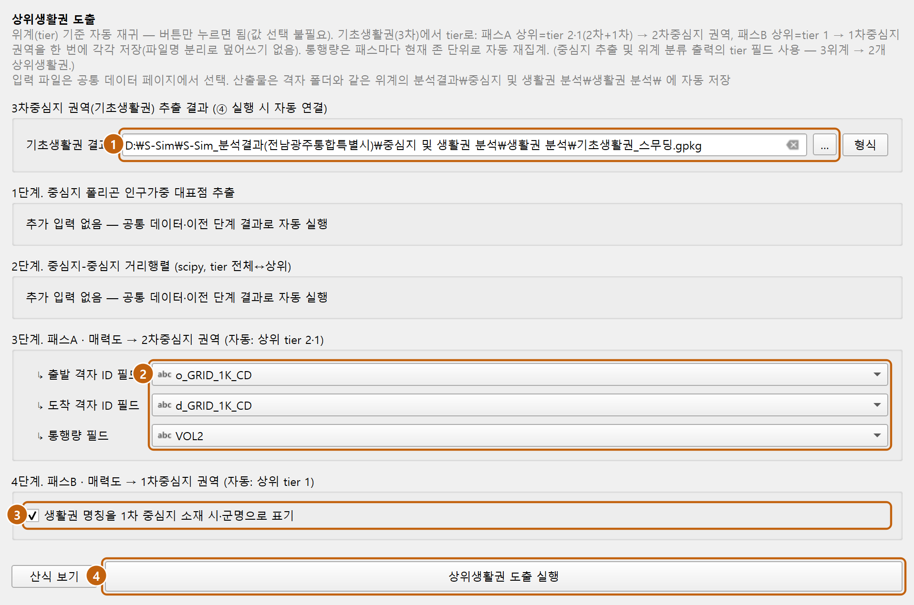
KPI 지표 계산 · 공통 데이터
KPI 공통 데이터 - 중심지-생활권 분석 후 자동 연결된 상태
KPI 공통 데이터 - 앞 단계 결과 자동 연결
INPUT
격자 · 생활권 경계 · 중심지 위계 · 도로망 · OD · 시설 · 탄소→
처리
중심지-생활권 분석 결과를 빈 칸에 자동 연결 - 직접 지정한 칸은 유지→
OUTPUT
일괄 산출과 ①~④ 산출이 공유- 1공통 입력 - 격자 인구 · 생활권 경계(1차중심지 권역) · 중심지 폴리곤 · 계획권역 경계(선택)
- 2지역명 · 필드 - 대시보드 제목 · 기준연도 · 도시위상 · 인구추세 유형 · 필드 선택
- 3탄소 총배출(선택) - 격자코드로 기준연도 격자에 조인 → ② 1인당 탄소
- 4도로망 · 격자→중심지 OD - ③ 네트워크성
- 5시설 - 근린·거점시설 폴더(폴더 안 gpkg·shp 전부) + 향유도 반경 · 최소 배후인구 → ④ 생활편리성
- 6장래 추계 시계열(선택) - 시나리오별 추계 인구 폴더(장래인구 배분 결과 자동 연결) · 연도 리스트
- 도시위상 · 인구추세 유형은 대시보드의 가이드라인 참조값 비교에 사용.
- 시설 기준 기본값: 근린 1.5km · 500명, 거점 3km · 3,000명.
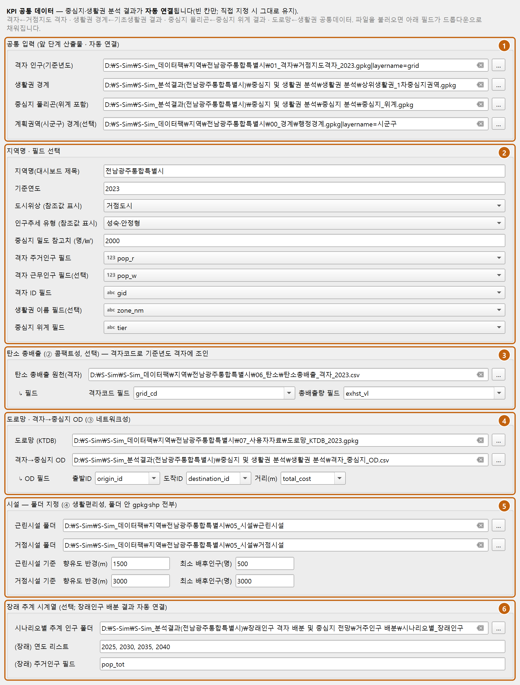
KPI 지표 계산 · 일괄 산출
일괄 산출 - 저장 폴더만 지정
일괄 산출 - ①~④ 지표 한 번에
INPUT
KPI 공통 데이터→
처리
① 기초통계 → ② 콤팩트성 → ③ 네트워크성 → ④ 생활편리성→
OUTPUT
지표별 CSV·JSON 4쌍 → 종합 리포트에 자동 연결- 1저장 폴더 - 비워두면
KPI 지표 계산\ - 2일괄 산출 - 끝나면 종합 리포트로 이동
- 공간단위: 계획권역 · 중심부(위계별) · 생활권.
- ①~④ 페이지의 지표별 산출과 같은 계산 - 일부 지표만 다시 낼 때는 해당 페이지에서.
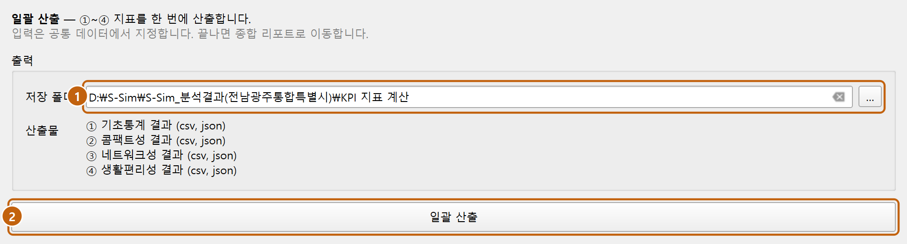
KPI 지표 계산 ①
① 기초통계 - 산출 지표 목록 + 실행 버튼
기초통계 - 면적 · 인구 · 밀도
INPUT
공통 데이터만 (추가 입력 없음)→
처리
공간단위별 면적·인구 집계→
OUTPUT
기초통계_결과.csv · json- 1① 기초통계 산출
| 지표 | 정의 | 산출 |
|---|---|---|
| 면적 | 공간단위의 면적 | 폴리곤 면적 합 (km²) |
| 주거인구 수 | 공간단위 내 주거인구 | 격자 pop_r 합 |
| 근무인구 수 | 공간단위 내 근무(종사자)인구 | 격자 pop_w 합 |
| 주거인구 밀도 | 단위면적당 주거인구 | 주거인구 ÷ 면적 |
| 근무인구 밀도 | 단위면적당 근무인구 | 근무인구 ÷ 면적 |
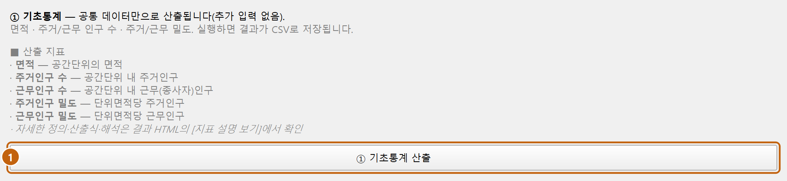
KPI 지표 계산 ②
② 콤팩트성 - 산출 지표 목록 + 실행 버튼
콤팩트성 - 중심지 집중 · 인구과소 · 탄소
INPUT
공통 데이터 (중심지 위계 + 탄소 총배출 선택)→
처리
중심지 안팎 인구·면적 비교 + 저밀도 격자 집계→
OUTPUT
콤팩트성_결과.csv · json- 1② 콤팩트성 산출
| 지표 | 정의 | 산출 |
|---|---|---|
| 중심지 수 | 공간단위 내 중심지 개수(위계별) | 중심지 폴리곤 수 |
| 중심지 면적·비율 | 중심지 면적과 권역 대비 비율 | 중심지 면적 ÷ 권역 면적 |
| 중심지 인구 수·비율 | 중심지 내 주거·근무인구와 권역 대비 비율 | 중심지 인구 ÷ 권역 인구 |
| 중심지 밀도 | 중심지 단위면적당 주거·근무인구 | 중심지 인구 ÷ 중심지 면적 |
| 인구과소지역 비율 | 저밀도 격자의 비율 | 주거밀도 20인/km² 이하 격자 비율 |
| 1인당 탄소 총배출 | 인구 1인당 총배출 (활동·주거·근무 분모) | 총배출 ÷ 인구 (tCO₂eq/인) |
- 1인당 탄소는 공통 데이터에 탄소 총배출을 지정한 경우만.
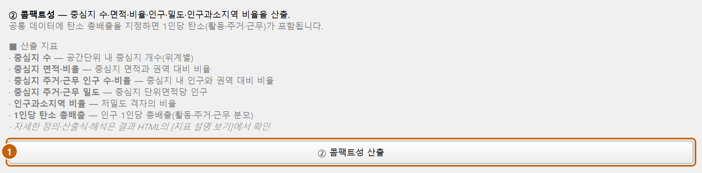
KPI 지표 계산 ③
③ 네트워크성 - 산출 지표 목록 + 실행 버튼
네트워크성 - 중심지 간 연결 · 접근 형평성
INPUT
공통 데이터 (도로망 + 격자→중심지 OD)→
처리
중심지 간 도로 최단시간 · 거주지→중심지 도달 인구→
OUTPUT
네트워크성_결과.csv · json- 1③ 네트워크성 산출
| 지표 | 정의 | 산출 |
|---|---|---|
| N분 내 도달 상위 중심지 수·비율 | 임계시간 내 도달하는 상위 중심지 | 상위 도달 수 ÷ 상위 총수 |
| N분 내 도달 동급 중심지 수·비율 | 임계시간 내 도달하는 동급 중심지 | 동급 도달 수 ÷ 동급 총수 |
| 중심지 접근 형평성 | 거주지 → 중심지 접근의 형평 | 임계시간 내 도달 거주인구 비율 |
- 임계시간 기본 30분.
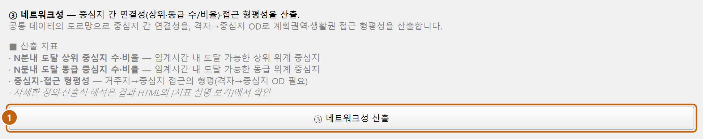
KPI 지표 계산 ④
④ 생활편리성 - 시설 폴더와 기준은 공통 데이터에서
생활편리성 - 시설 공급 · 향유 · 접근
INPUT
공통 데이터 (근린·거점시설 폴더 + 향유도 반경 · 최소 배후인구)→
처리
시설 유형별 공급량 · 서비스권 배후인구 · 최근린 거리→
OUTPUT
생활편리성_결과.csv · json- 1④ 생활편리성 산출
| 지표 | 정의 | 산출 |
|---|---|---|
| 천인당 시설수 | 인구 천 명당 시설 수 | 시설 수 ÷ 인구 × 1,000 |
| 중심지 내 시설 비율 | 해당 유형 시설 중 중심지 내 위치 비율 | 중심지 내 시설 ÷ 전체 시설 |
| 서비스권 향유도 | 서비스반경 내 배후인구 비율 | 서비스권 포함 인구 ÷ 인구 |
| 관리대상 시설 비율 | 배후인구 기준 미달 시설 비율 | 배후인구 < 기준 시설 ÷ 전체 |
| 평균 접근성 | 최근린 시설까지 평균 거리 | 격자별 최근린 시설 도로거리 평균 (km) |
- 시설 유형별로 산출 (전남광주: 근린 5종 · 거점 5종).
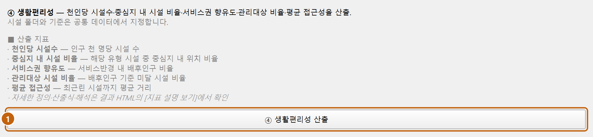
종합 리포트 생성
종합 리포트 - 일괄 산출 후 자동 연결된 상태 생성된 대시보드 - 전남광주통합특별시 진단 요약
종합 리포트 - 진단 대시보드 HTML 한 파일
INPUT
①~④ 결과 JSON (일괄 산출 시 자동 연결)→
처리
지도 · 기초정보 · 핵심지표 · 공간단위별 표를 HTML 한 파일로→
OUTPUT
공간구조_진단_대시보드.html - 브라우저에서 바로 열림- 1산출 결과 - ①~④ JSON (자동 연결)
- 2HTML 저장 경로 - 비워두면
KPI 지표 계산\ - 3종합 리포트 생성 - [완료 후 브라우저 열기] 체크 시 바로 열림
| 화면 | 내용 |
|---|---|
| 진단 요약 | 생활권·중심지 지도 · 기초정보 · 핵심지표 4종 |
| 계획권역 · 중심부 · 생활권별 | 공간단위별 KPI |
| 지표 설명 보기 | 지표 정의 · 산출식 · 해석 |
| 지역 과거 현황 보기 | 과거 격자 인구로 본 기준연도까지의 변화 |
| 성과 평가 지원 | 목표치 설정 → 목표연도 실적과 비교 |
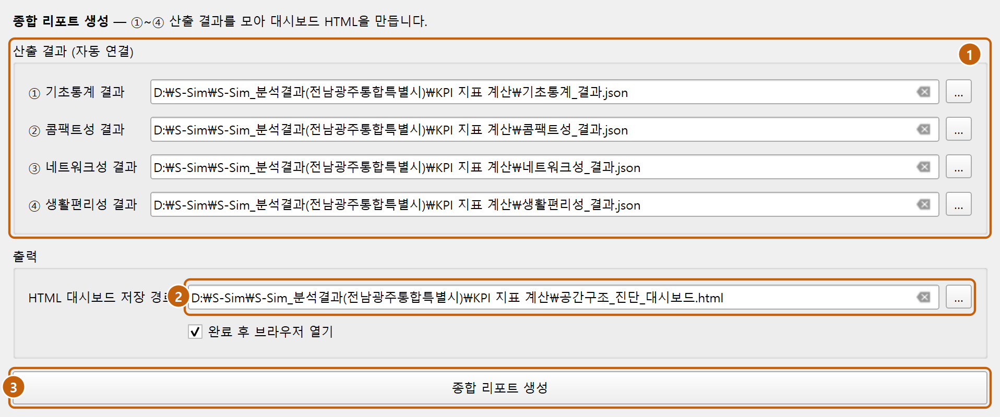
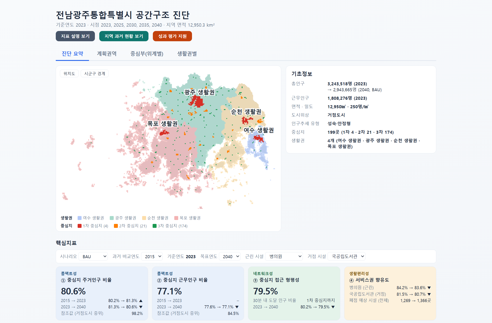
종합 리포트 · 화면 보기
리포트 화면 보기 - 공간구조_진단_대시보드.html
종합 리포트 화면 · 구성
계획권역 탭 - 선택 막대 아래 핵심지표 카드
화면 구성 - 버튼 3개 + 탭 4개
상단 버튼
지표 설명 보기 · 지역 과거 현황 보기 · 성과 평가 지원→
탭
진단 요약 · 계획권역 · 중심부(위계별) · 생활권별→
탭 안
선택 막대 + 핵심지표 + 상세 분석(기초통계·콤팩트성·네트워크성·생활편리성)| 요소 | 내용 |
|---|---|
| 선택 막대 | 시나리오(BAU · 계획반영 · 유도정책) · 과거 비교연도 · 목표연도 · 근린·거점 시설 - 바꾸면 탭 안의 값과 그래프가 함께 바뀜 |
| 핵심지표 4종 | ① 중심지 주거인구 비율 · ② 중심지 근무인구 비율 · ③ 중심지 접근 형평성 · ④ 서비스권 향유도 |
| 상세 분석 | 탭 아래 지표군 버튼 - 기초통계 · 콤팩트성 · 네트워크성 · 생활편리성 표와 추이 그래프 |
| 지표 해설 | 카드 아래 [지표 해설(가이드라인)] 버튼 - 가이드라인의 해석 기준이 펼쳐짐 |
- 그래프에 마우스를 올리면 값 표시. 범례를 누르면 해당 선을 켜고 끔.
- HTML 한 파일 - 다른 컴퓨터로 옮겨도 그대로 열림 (그래프 라이브러리는 인터넷에서 불러옴).
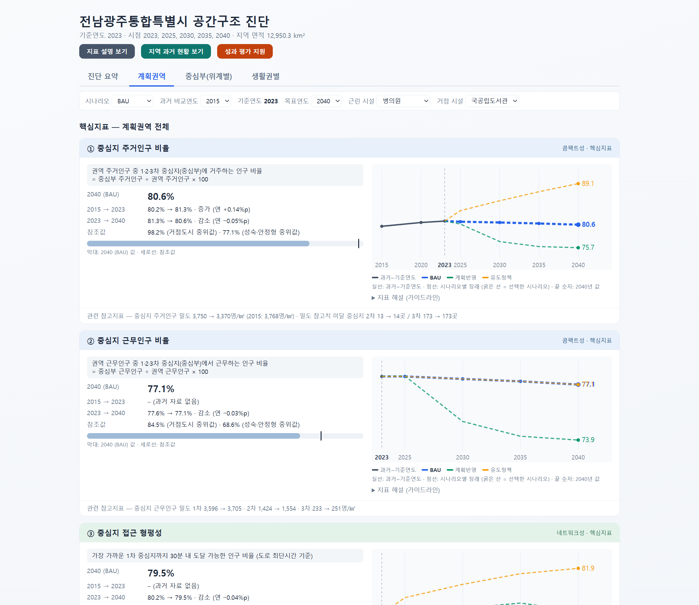
종합 리포트 화면 · 진단 요약
진단 요약 - 전남광주통합특별시
진단 요약 - 지도 + 기초정보 + 핵심지표
- 1지도 - 생활권 배색 + 중심지 위계색. [위치도]·[시군구 경계]로 겹쳐 보기, 범례 항목을 누르면 켜고 끔
- 2기초정보 - 총인구(기준연도 → 목표연도) · 근무인구 · 면적·밀도 · 도시위상 · 인구추세 유형 · 중심지 수(위계별) · 생활권
- 3핵심지표 - 지표마다 목표연도 값, 과거 → 기준연도 · 기준연도 → 목표연도 변화(▲▼), 가이드라인 참조값
- 참조값 = 같은 도시위상·인구추세 유형의 중위값 (가이드라인) - 지역 값이 어느 수준인지 비교용.
- ④ 서비스권 향유도는 선택 막대의 근린·거점 시설 기준, 폐점 예상 시설 수 함께 표시.
종합 리포트 화면 · 계획권역
계획권역 - ① 중심지 주거인구 비율 카드
계획권역 - 핵심지표 카드와 시나리오 추이
- 1정의·산식 - 카드 왼쪽 위 회색 상자
- 2값과 변화 - 목표연도 값 · 과거 → 기준연도 · 기준연도 → 목표연도 (연 변화율) · 참조값 막대(세로선 = 참조값)
- 3추이 그래프 - 실선 = 과거~기준연도, 점선 = 시나리오별 장래. 굵은 선이 선택한 시나리오
- 4관련 참고지표 - 카드 아래 줄 (중심지 밀도, 밀도 참고치 미달 중심지 수 등)
- 상세 분석: 기초통계 추이 · 콤팩트성 추이 · 탄소 부하 · 네트워크성 · 생활편리성 · 시설 추이.
종합 리포트 화면 · 중심부
중심부(위계별) - 위계 누적 집합과 위계별 지표
중심부(위계별) - 1차 · 2차 · 3차 중심지 비교
- 1중심지 지도 - 위계색 (1차 빨강 · 2차 주황 · 3차 초록)
- 2위계 누적 집합 - 1차 / 1차+2차 / 1차+2차+3차로 넓혀 가며 핵심지표 비교
- 3참고지표 - 위계별 - 중심지 주거·근무 밀도, 밀도 참고치(2,000명/㎢) 미달 중심지 수
- 4상세 분석 - 위계별 지표 표 · 인구 수/밀도 · 추이 · 중심지 인구 비중 · 탄소 · 중심지 간 연결성(시간권, 레이더 보기) · 생활편리성
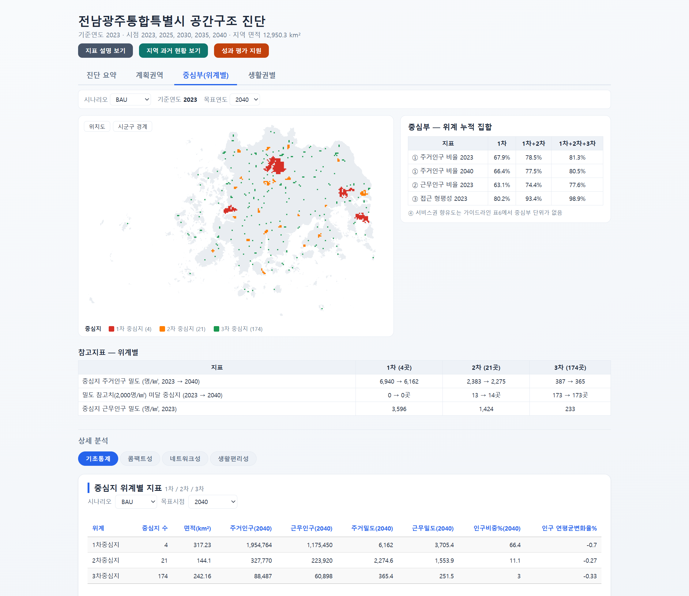
종합 리포트 화면 · 생활권별
생활권별 - 생활권 한눈에 + 생활권 카드
생활권별 - 생활권마다 핵심지표
- 1생활권 지도 - 생활권을 누르면 아래 해당 생활권으로 이동
- 2생활권 한눈에 - 총인구(기준연도 → 목표연도) · ① 주거 비율 · ② 근무 비율
- 3생활권 카드 - 생활권마다 핵심지표 4종 + 참고지표(밀도 참고치 미달 중심지 · 폐점 예상 시설)
- 4상세 분석 - 생활권 인구 비중 변화 · 생활권별 지표 · 선택 생활권 추이 · 탄소 · 네트워크성 · 생활편리성 · 시설별 배후인구·폐지시점
- 생활권 = KPI 공통 데이터의 생활권 경계 (기본: 1차중심지 권역).
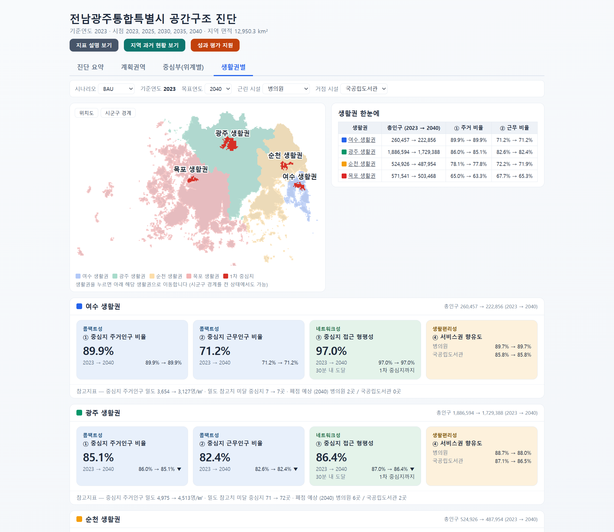
종합 리포트 화면 · 지표 설명 보기
지표 설명 보기
지표 설명 보기 - 지표별 정의 · 산출 · 해석
- 상단 [지표 설명 보기] - 기초통계 · 콤팩트성 · 네트워크성 · 생활편리성 지표 표.
- 열: 지표 · 정의 · 산출 방법 · 해석 관점 · 단위.
- 접근 형평성은 격자→중심지 OD가 있을 때만 산출.
- 오른쪽 위 ×로 닫음.
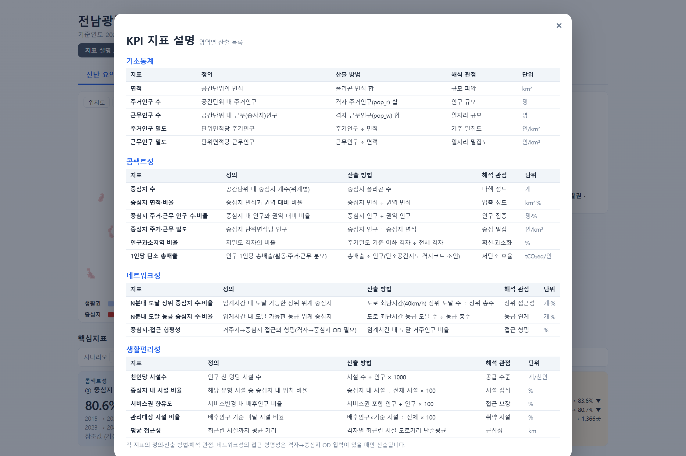
종합 리포트 화면 · 지역 과거 현황
지역 과거 현황 - 그래프 4종
지역 과거 현황 - 2000년부터 기준연도까지
| 그래프 | 내용 |
|---|---|
| 총인구 추이 | 계획권역 · 중심지 주거인구 |
| 중심지 인구 집중도 추이 | 전체 중심지 · 1차 · 2차 · 3차 중심지 (%) |
| 생활권별 인구 추이 | 생활권마다 주거인구 |
| 인구밀도 추이 | 계획권역 · 중심지 (인/㎢) |
- 2000 · 2005 · 2010 · 2015 · 2020 · 기준연도 - 플러그인에 내장된 전국 과거 1km 격자 주거인구를 격자코드로 집계.
- 중심지·생활권 경계는 기준연도 것을 그대로 적용. 근무인구는 과거 자료가 없어 주거만.
- 격자코드가 과거 자료와 맞지 않으면 버튼이 나타나지 않음.
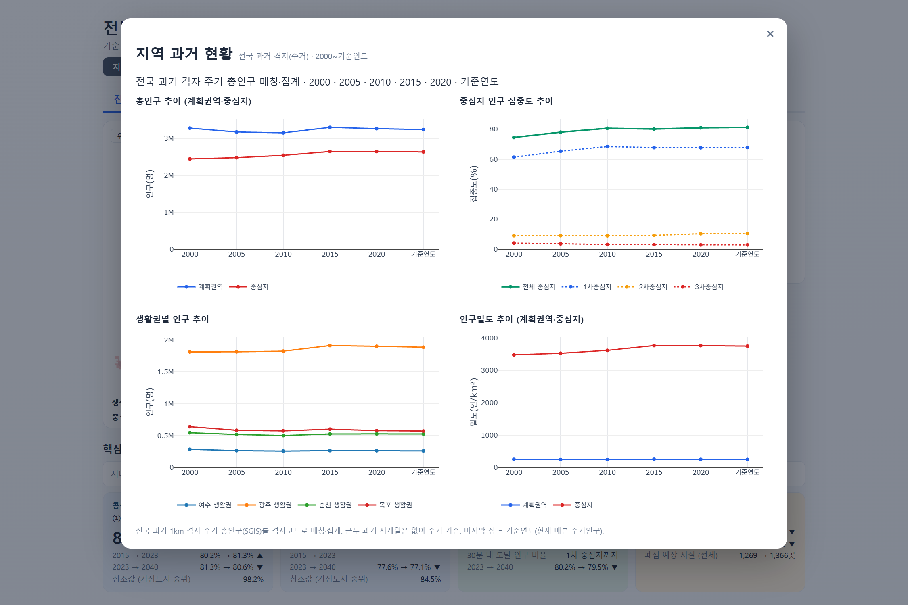
종합 리포트 화면 · 성과 평가 지원
성과 평가 지원 - 위: 평가 기준 설정 · 아래: 평가 결과
성과 평가 지원 - 목표치 설정 → 평가 실행
평가 기준
실적·비교 시나리오 · 평가 시점 · 목표 설정 방식→
평가 실행
평가 시점 실적 − 목표치 → 판정→
결과
핵심지표별 판정 + 실적·목표·BAU 그래프와 표- 1평가 기준 설정 - 실적 시나리오(예: 계획반영) · 비교 시나리오(BAU) · 평가 시점 · 추세 산정 시작연도 · 판정 구간(±%p) · ④ 향유도 시설
- 2목표 설정 방식 - 지표마다 선택: 과거 추세 연장(①, 과거 자료가 있을 때) · 기준연도 수준 유지 · 도시위상·인구추세 유형 중위값 · 직접 입력
- 3평가 실행 - 지표별 판정과 그래프 표시
판정 = 평가 시점 실적 − 목표치
+구간 이상 초과 달성 · 0 이상 달성 · −구간 이상 소폭 미달 · 그 아래 미달 (기본 구간 ±0.5%p)
- 결과 카드: 판정 · 목표 대비 차이 · 실적/목표 트렌드/BAU 그래프와 연도별 표 · 목표 설정 근거 · 보충지표.
- 결과 아래 메모 칸에 해석을 직접 입력 가능.
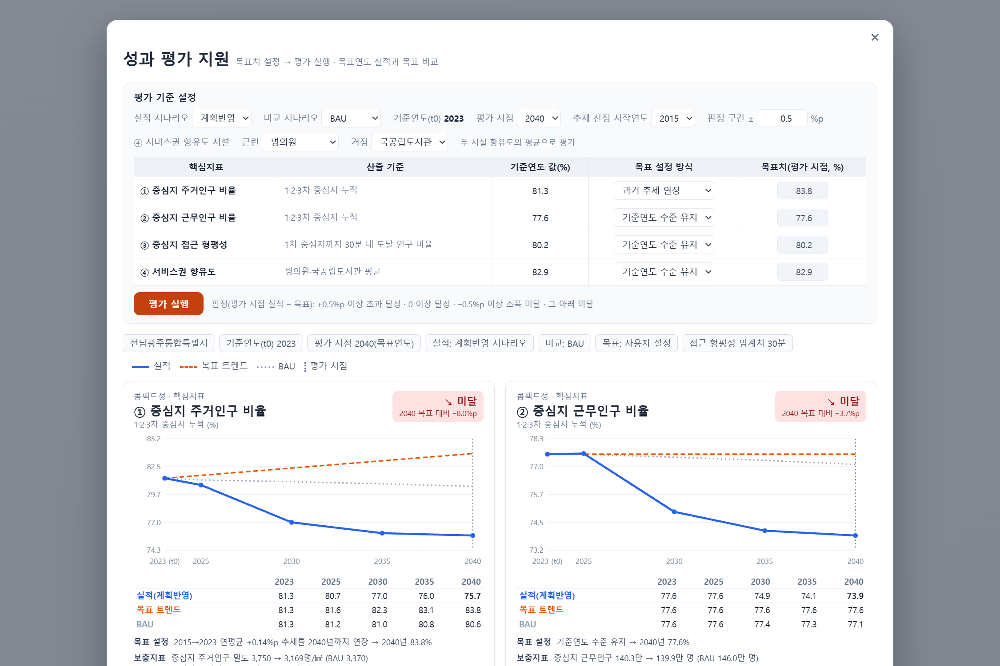
시각화
3D 시각화 - 배분 결과는 자동 연결
3D 시각화 - deck.gl HTML 한 파일
INPUT
배분 결과 슬롯 5개 + 장래 중심지 식별 결과 - 각 단계 실행 시 자동 연결, 빈 슬롯은 건너뜀→
처리
격자 = 기둥(높이 √인구) · 중심지 = 위계색 폴리곤 압출→
OUTPUT
3D 시각화 HTML 한 파일 - 브라우저에서 바로 열림- 1배분 결과 슬롯 - 거주 ①②③ · 근무 ①② (자동 연결, 직접 지정 가능)
- 2장래 중심지 식별 결과 - 위계색 3D 폴리곤으로 표시
- 3읍면동 경계(선택) - 지명 표시용
- 4배경지도 - VWorld 인증키(선택) · 지도 종류
- 5HTML 저장 파일 · 6생성 후 브라우저 열기
| 조작 | 방법 |
|---|---|
| 연도 전환 | 연도 점 클릭 - 바닥에서 올라오는 애니메이션 |
| 회전 | 휠 버튼 드래그(좌우 방향·상하 기울기) 또는 우클릭 드래그 |
| 비교 | 좌우 비교 모드 - 시점 동기화, 시나리오·연도 각각 (BAU 2025 vs 계획인구 2040) |
- 배경지도와 deck.gl은 인터넷에서 불러옴.
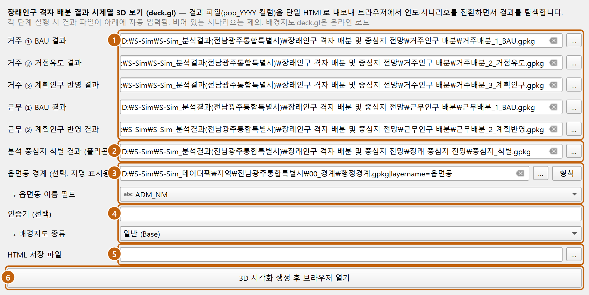
3D 시각화 · 화면 보기
3D 화면 보기 - 인구배분_3D.html
3D 시각화 화면 · 구성
중심지 식별 2040년 - 배경지도 + 읍면동 경계
화면 구성 - 왼쪽 패널 + 3D 지도
- 1배경 - 검정 · 회색 (배경지도가 있으면 그 위에 표시)
- 2좌/우 비교 모드 · 읍면동 경계(마우스를 올리면 지역명)
- 3지도 - 시나리오 선택 (거주 BAU · 거점유도 · 계획인구, 근무 BAU · 계획반영, 중심지 식별)
- 4연도 - 연도 버튼을 누르면 바닥에서 올라오는 애니메이션으로 전환
- 5범례 - 격자 시나리오는 색·높이 = 인구, 중심지 식별은 위계색(1차 빨강 · 2차 주황 · 3차 초록 · 위계외 회색) · 높이 = √주거인구
| 조작 | 방법 |
|---|---|
| 회전 · 기울기 | 휠 버튼 드래그 또는 우클릭 드래그 |
| 이동 · 확대 | 왼쪽 드래그 · 휠 |
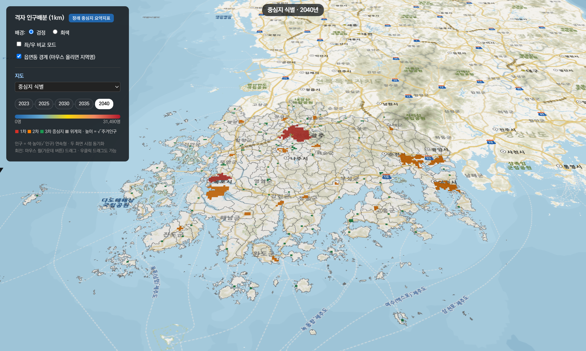
3D 시각화 화면 · 중심지 식별
중심지 식별 2023년(기준연도) - 연도 버튼으로 2040년까지 전환
중심지 식별 - 위계색 3D 폴리곤
- 지도에서 [중심지 식별] 선택 → 연도별 장래 중심지 폴리곤.
- 색: 1차 빨강 · 2차 주황 · 3차 초록 · 위계외 회색. 높이 = √주거인구.
- 연도 버튼으로 기준연도 → 2040 중심지 변화 확인.
- 패널 제목 옆 [장래 중심지 요약지표] 버튼이 나타남 (다음 절).
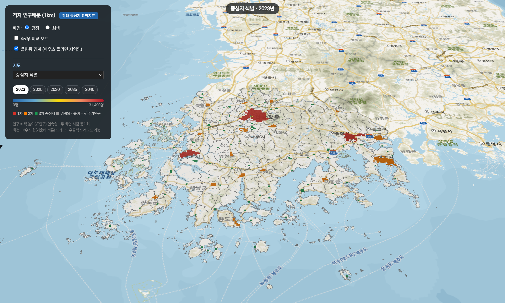
3D 시각화 화면 · 좌우 비교
좌우 비교 - 중심지 식별 2023년 · 2040년
좌우 비교 - 시나리오 · 연도를 나란히
- [좌/우 비교 모드] 체크 → 화면이 둘로 나뉘고 패널에 왼쪽·오른쪽 지도 선택이 생김.
- 양쪽 시나리오·연도를 따로 고름 (예: 중심지 식별 2023 vs 2040).
- 회전·확대는 두 화면이 함께 움직임. 오른쪽 지도의 배경지도는 지도를 한 번 움직이면 표시됨.
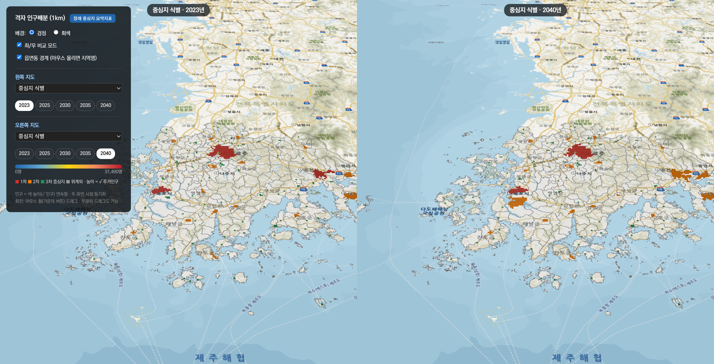
3D 시각화 화면 · 장래 중심지 요약지표
장래 중심지 요약지표
장래 중심지 요약지표 - 연도별 그래프 4종
| 그래프 | 내용 |
|---|---|
| 중심지 수 | 연도별 중심지 개수 |
| 중심지 면적 · 중심화율 | 중심지 면적(㎢) · 권역 대비 비율(%) |
| 인구 집중도 추이 | 중심지 내 주거·근무인구 ÷ 권역 총인구 (%) |
| 인구 밀도 추이 | 중심지 주거·근무 인구밀도 (명/㎢) |
- 점선 = 전국 기준값 (밀도 그래프는 일본 DID 기준 함께).
- 지도에서 중심지 식별을 볼 때만 버튼이 나타남.
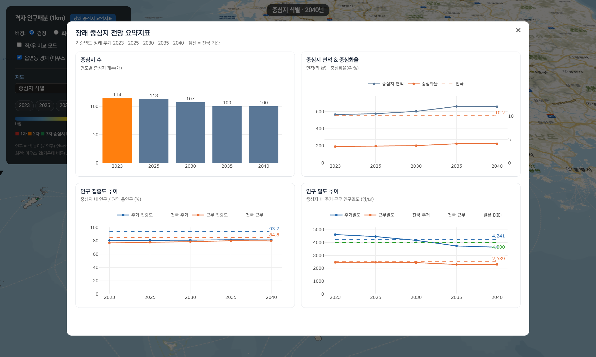
데이터 탐색
기초 통계 탐색 - 파일과 필드만 고르면 됨
기초 통계 탐색 - 필드별 기초통계 한 표로
INPUT
격자·테이블 파일 아무거나 (원천 격자, 배분 결과, 위계 결과 등)→
처리
선택한 숫자 필드를 한 번에 집계→
OUTPUT
필드별 통계 표 (화면 표시 - 파일 저장 없음)- 1파일 선택 - 숫자 필드 목록 자동 인식
- 2통계 필드 - 복수 선택 (숫자 필드 전체 선택 버튼)
- 3통계 계산 - 표에 필드별 결과
- 4분포 그래프 - 표에서 필드 행 선택 후 버튼. 0 제외 옵션
| 통계 | 설명 |
|---|---|
| 유효 N · NULL · 0 개수 | 값 있는 피처 수, 결측 수, 0인 피처 수 |
| 합계 · 평균 · 표준편차 | 전체 유효값 기준 |
| 0 제외 평균 | 0인 격자를 뺀 평균 - 인구 0 격자가 많은 데이터에서 실질 평균 확인 |
| 최소 · Q1 · 중앙값 · Q3 · 최대 | 사분위(선형보간) 분포 요약 |
| 왜도 · 첨도 | 분포 비대칭도·뾰족함 (첨도는 정규분포 = 0 기준) |
| 분포 그래프 | 히스토그램 + 같은 평균·표준편차의 정규분포 곡선 |
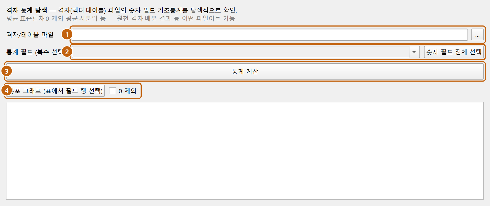
MCP 서버
MCP 서버 - Claude 대화로 분석 실행
INPUT
Claude Desktop · Claude Code 대화창 요청→
처리
내 PC의 QGIS가 화면 없이 실행 - 자료는 PC 밖으로 나가지 않음→
OUTPUT
플러그인과 같은 결과 폴더 + 결과 요약- 1준비 - QGIS(LTR)·Claude Desktop 설치,
설치.bat으로 플러그인 설치 - 2
mcp_server\설치_mcp.bat실행 - 필요한 구성요소 설치 + Claude Desktop 등록 (인터넷 필요) - 3Claude Desktop 재시작 - 트레이까지 완전히 종료 후 다시 열기. 도구 목록에
krihs-s-sim확인 - 4Claude Code(선택) - 아래 명령으로 등록
claude mcp add -s user krihs-s-sim -- cmd /c "(설치 폴더)\mcp_server\run_server.bat"
- 결과:
mcp_server\분석결과\S-Sim_분석결과(지역명)\ - 설치 확인:
mcp_server\run_server.bat --selftest
대화 예
- 전남광주 데이터팩 입력 파일이 다 있는지 확인해 줘
- 전남광주 처음부터 끝까지 다 돌려 줘 (끝나면 KPI 요약해 줘)
- 최소 주거밀도 200, 강소도시 기준으로 중심지·생활권만 다시 돌려 줘
- 거점시설 기준을 반경 5km, 최소 배후인구 1만 명으로 바꿔서 생활편리성만 다시 산출해 줘
| 도구 | 기능 |
|---|---|
| check_environment | 설치 상태 점검 |
| list_regions | 데이터팩 지역 목록 · 입력 파일 확인 |
| list_algorithms | 알고리즘 17종 목록 |
| describe_algorithm | 알고리즘 파라미터 설명 |
| run_algorithm | 알고리즘 1개 실행 |
| run_pipeline | 플러그인 전체 흐름을 메뉴 순서대로 - 장래인구 배분 → 장래 중심지 → 중심지-생활권 ①~⑤ → KPI·리포트 → 3D. 단계 선택, 기준값 변경 가능 (전체 약 15분) |
| run_kpi | KPI 산출 + 종합 리포트 |
| job_status · cancel_job | 진행 확인 · 중지 |
| guide | 도움말 - 분석 흐름, 중심지·생활권 기준, KPI 해석, 입력자료·결과 폴더 |
문제 해결 목록에 안 보이면 Claude Desktop을 트레이까지 완전히 종료 후 재시작 · 설치 오류는 인터넷 연결 확인 · 플러그인을 못 찾으면
설치.bat 먼저.